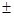
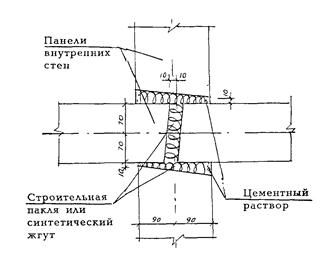
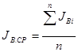
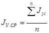

Комплекс перспективного развития г. Москвы
Управление развития генплана г. Москвы
Мосстройлицензия
ВЕДОМСТВЕННЫЕ
СТРОИТЕЛЬНЫЕ НОРМЫ
ИНСТРУКЦИЯ
ПО ОБЕСПЕЧЕНИЮ НОРМАТИВНЫХ
ТРЕБОВАНИЙ ЗАЩИТЫ ОТ ШУМА
В КРУПНОПАНЕЛЬНЫХ ЖИЛЫХ
ЗДАНИЯХ ПРИ ПРОИЗВОДСТВЕ
СТРОИТЕЛЬНО-МОНТАЖНЫХ РАБОТ
ВСН 41-96
МОСКВА- 1997
СОДЕРЖАНИЕ
Инструкция по обеспечению нормативных требований защиты от шума в крупнопанельных жилых зданиях при производстве строительно-монтажных работ разработана к.т.н. Ф.С. Белавиным, к.т.н. В.И. Снятковым (НИИМосстрой) при участии Ю.И. Столярова, к.т.н. В.Д. Фельдмана (Мосстройлицензия) по результатам обобщения отечественного опыта выполнения строительно-монтажных работ.
Инструкция содержит рекомендации по технологии строительно-монтажных работ, выполнение которых позволит обеспечить требования защиты от шума в крупнопанельных жилых зданиях, заложенные при проектировании.
Инструкция разработана взамен Инструкции по обеспечению нормативной звукоизоляции внутренних ограждающих конструкций крупнопанельных жилых домов из унифицированных изделий единого каталога (ВСН 168-80).
Инструкция согласована с АОХК "Главмосстрой", АООТ "Домостроительный комбинат № 1" и "Специализированным управлением № 224".
|
Комплекс перспективного развития г. Москвы |
Ведомственные строительные нормы |
ВСН 41-96 |
|
Управление развития Генплана г. Москвы Мосстройлицензия |
Инструкция по обеспечению нормативных требований защиты от шума в крупнопанельных жилых зданиях при производстве строительно-монтажных работ |
взамен |
1.1. Инструкция распространяется на технологию строительно-монтажных работ, выполнение которой позволяет реализовать заложенную при проектировании (требования СНиП II-12-77 глава "Защита от шума") /1/ и подтвержденную опытно-экспериментальной проверкой звукоизоляцию внутренних и наружных ограждающих конструкций крупнопанельных жилых зданий, возводимых в г. Москве.
Настоящая инструкция имеет целью обеспечение допустимых уровней шума в жилых комнатах квартир и предназначена для строителей, проектировщиков и инженерно-технического персонала.
1.2. Обеспечение нормативных требований по допустимому шуму в жилых комнатах зависит от многих факторов, наиболее важными из которых являются: фактическая звукоизоляция окон и внутренних ограждающих конструкций, а также фактическая виброизоляция конструкций лифтовых шахт.
|
Внесены НИИМосстроем |
Утверждены |
Дата введения в
действие |
1.3. Заложенные проектные решения по звукоизоляции ограждающих конструкций и виброизоляции конструкций лифтовых шахт при выполнении строительно-монтажных работ обеспечиваются:
- тщательной заделкой стыков панелей междуэтажных перекрытий, внутренних и наружных стен, а также по контуру оконных и дверных блоков;
- выполнением требований к конфигурации технологических отверстий в ограждающих конструкциях и технологии их заделки;
- мероприятиями по виброизоляции конструкций лифтовых шахт.
1.4. Монтаж сборных конструкций зданий ведется по рабочим чертежам домов определенных серий и альбомам типовых узлов, разработанным проектными организациями г. Москвы, а также по проектам производства работ и технологическим картам применительно к каждой серии дома.
1.5. Монтаж панелей наружных и внутренних стен, перекрытий и других сборных элементов выполняется на пластичном цементном растворе марки не ниже 150. Подвижность раствора должна обеспечивать возможность получения ровного и плотного шва.
1.6. Изменения проектных решений (в том числе применение новых материалов и технологий), связанных с обеспечением нормативной звукоизоляции ограждающих конструкций и допустимых уровней шума в жилых комнатах, допускается только после согласования с проектной организацией. Применение новых конструкций и материалов должно быть подтверждено сертификатом.
2.1. В жилых комнатах квартир уровни шума не должны превышать допустимых уровней (ГОСТ 12.1.036-81 и СН 3077-84)/2, 3/, приведенных в таблице 2.1.
Таблица 2.1
Допустимые уровни шума в помещениях жилых комнат квартир
|
Наименование помещения |
Максимальные уровни шума, дБА |
|
|
Жилые комнаты квартир: |
|
|
|
днем |
40 |
55 |
|
ночью |
30 |
45 |
Примечания:
1. Допустимые уровни шума действительны при измерении определяемого уровня звука по ГОСТ 23337-78 /4/.
2. Уровни звука и эквивалентные уровни звука в дБА для шума, создаваемого в помещениях системами кондиционирования воздуха, воздушного отопления и вентиляции, следует принимать на 5 дБА ниже указанных в таблице.
2.2. Допустимые уровни шума в жилых комнатах квартир обеспечиваются внутренними и наружными ограждающими конструкциями, а также мероприятиями по виброизоляции конструкций лифтовых шахт.
Наружные ограждающие конструкции, звукоизоляция которых определяется по методике, изложенной в Приложении 1, ограничивают проникновение внешнего (уличного) шума.
Для защиты от шума, проникающего из смежных помещений, установлены (СНиП II-12-77) нормативные значения звукоизоляции внутренних ограждающих конструкций.
2.3. Нормируемыми параметрами звукоизоляции внутренних ограждающих конструкций являются индекс изоляции воздушного шума в децибелах и индекс приведенного уровня ударного шума в децибелах. Нормативные индексы изоляции воздушного шума ограждающими конструкциями YНВ, дБ, и приведенного уровня ударного шума под перекрытием YНУ, дБ, жилых домов приведены в таблице 2.2.
2.4. Звукоизоляция ограждающей конструкции соответствует нормативным требованиям, если ее фактический (измеренный) индекс изоляции воздушного шума равен или больше нормативного, а фактический индекс приведенного уровня ударного шума равен или меньше нормативного.
3.1. фактическая звукоизоляция панелей междуэтажных перекрытий, внутренних и наружных стен в значительной степени определяется качеством (выполнением технологии) заделки стыков между панелями, а также по контуру оконных и дверных блоков.
Таблица 2.2
|
№ п./п |
Индекс изоляции воздушного шума, YНВ, дБ |
Индекс приведенного уровня ударного шума, YНУ, ДБ |
|
|
|
Жилые дома |
|
|
|
1 |
Перекрытия между помещениями квартир |
50 |
67 |
|
2 |
Перекрытия между помещениями квартир и неиспользуемыми чердачными помещениями |
47 |
|
|
3 |
Перекрытия между помещениями квартир и подвалами, холлами и используемыми чердачными помещениями |
50 |
67 |
|
4 |
Перекрытия между помещениями квартир и расположенными внизу магазинами |
55 |
67 |
|
5 |
Перекрытия между помещениями квартир и расположенными внизу ресторанами, спортивными залами, кафе и другими подобными помещениями |
60 |
67 501 |
|
6 |
Перекрытия между комнатами в двухэтажной квартире |
41 |
75 |
|
7 |
Перекрытия, отделяющие помещения культурно-бытового обслуживания общежитии друг от друга и от помещений общего пользования (холлы, вестибюли, коридоры) |
45 |
75 |
|
8 |
Стены и перегородки между квартирами, между помещениями квартиры и лестничными клетками, холлами, коридорами, вестибюлями |
50 |
- |
|
9 |
Стены между помещениями квартиры и магазинами |
55 |
- |
|
10 |
Стены между помещениями квартиры и ресторанами, спортивными залами, кафе и другими подобными помещениями |
60 |
- |
|
11 |
Перегородки без дверей между комнатами, между кухней и комнатой в квартире |
41 |
- |
|
12 |
Перегородки между комнатами и санитарным узлом одной квартиры |
45 |
- |
|
13 |
Входные двери квартир, выходящие на лестничные клетки, в холлы, вестибюли и коридоры |
30 |
- |
|
14 |
Лестничные клетки и марши |
- |
671 |
|
15 |
Стены и перегородки, отделяющие помещения культурно-бытового обслуживания общежитии друг от друга и от помещений общего пользования (холлы, вестибюли, лестничные клетки) |
45 |
- |
_________________________
1 Требования, предъявляемые к передаче ударного шума в помещении, защищаемое от шума, при ударном воздействии на пол не защищаемого от шума помещения.
Некачественная заделка стыков может снизить звукоизоляцию ограждающих конструкций настолько, что звукоизоляция конструкции, запроектированной без запаса (до 5 дБ), в результате этого, может не отвечать нормативному требованию.
3.2. Работы по заделке стыков выполняются с соблюдением последовательности, предусмотренной технологическими картами проекта производства работ.
3.3. Для обеспечения звукоизоляции платформенные стыки между панелями междуэтажных перекрытий и внутренних стен (рис. 1) необходимо заделывать плотно, герметично. Горизонтальные швы должны быть сплошными, без пустот. Перед укладкой раствора поверхности стыкуемых панелей и зазоры между панелями перекрытия следует очистить от мусора, пыли и случайных наслоений, а в зимнее время - от снега и льда (продуть горячим воздухом).
Раскладка пластичного цементно-песчаного раствора производится непосредственно перед монтажом панели на место, чтобы было достигнуто полное заполнение шва раствором в результате его немедленного обжатия. Места недостаточного заполнения швов, а также все углубления и раковины в швах после их подрезки и зачистки тщательно зачеканиваются по всей длине стыка раствором.
Номинальная
толщина шва под панелями перекрытий (у потолка) должна быть около 10 мм, но не
менее 5 мм и не более 20 мм, а толщина шва над панелями перекрытий (у пола) –
20 
3.4. Заделка стыковых соединений наружных стен и панелей перекрытий должна выполняться в соответствии с рабочими чертежами проекта и инструкцией ВСН 19-95 /5/. В другом варианте заделки горизонтальных стыковых соединений наружных стен и перекрытий в качестве заполнителя используется пенопласт ФРП-1, жидкая композиция которого заливается порционно в полость стыка в соответствии с требованиями ВСН 17-94 /6/.
Горизонтальный шов должен быть особо тщательно заполнен только свежеприготовленным пластичным раствором
Рис. 1. Заделка платформенных стыков между панелями перекрытий и внутренних стен
Требования, предъявляемые к технологии заделки, чистоте стыкуемых поверхностей и качеству заделки горизонтальных стыковых соединений между панелями перекрытия и наружными стенами (рис. 2) аналогичны изложенным в п. 3.3.
В стыках не должно оставаться неплотностей и пустот. Толщина швов должна выдерживаться в пределах требований проекта с отклонениями 10 мм; глубина опирания наружных панелей на панели перекрытия должна быть не менее 80 мм, а глубина заполнения шва раствором не менее 60 мм. Горизонтальные стыки со стороны пола следует заделывать цементно-песчаным раствором М 150.
Зазор между нижней кромкой панели перекрытия и полкой панели наружной стены необходимо плотно заполнить уплотнительными прокладками, а затем оштукатурить согласно проекту.
3.5. Вертикальные стыки между панелями внутренних стен (рис. 3) при ширине монтажного зазора до 30 мм предпочтительно заделывать строительной паклей, смоченной в гипсовом растворе или синтетическим жгутом (с обжатием его на 20 - 50 %). После заполнения стыка уплотняющим материалом его необходимо оштукатурить по всей высоте цементно-песчаным раствором: с широкой стороны стыка на всю глубину до заполнителя и не менее чем на 20 мм - с узкой стороны стыка.
3.6. Стыки в межкомнатных перегородках необходимо плотно заполнять смоченной в гипсовом растворе паклей, либо синтетическим жгутом, а затем заделать по всей высоте стыка цементным раствором: с широкой стороны стыка на всю глубину до заполнителя и не менее чем на глубину 20 мм - с узкой стороны стыка.
3.7. Вертикальные стыки между панелями наружных и внутренних стен (рис. 4) предварительно герметизируются и утепляются в соответствии с проектом и инструкцией ВСН 19-95 /5/, а затем замоноличиваются поэтажно пластичным цементно-песчаным раствором марки М 150.
При замоноличивании следует применять штыковку - металлический стержень диаметром 12 - 14 мм, длиной 1,5 - 2,0 м.
Рис. 2. Заделка стыковых соединений наружных стен и панелей перекрытий

Рис. 3. Вертикальные стыки между панелями внутренних стен
Рис. 4. Замоноличенный вертикальный стык между панелями наружных и внутренних стен
В другом варианте заделки вертикальных стыков наружных стеновых панелей в качестве заполнителя используется пенопласт ФРП-1, которым по методу заливки исходной композиции заполняется (поэтажно) вся полость вертикального стыка в соответствии с требованиями ВСН 17-94 /6/. Степень заполнения стыка ФРП-1 определяется после его распалубки. Пенопласт должен заполнять весь объем стыка. В случае если заполнение неполное, следует вскрыть и ликвидировать причины некачественного заполнения стыка и этот участок заделать повторно.
После удаления специальной опалубки в виде жгута из вспененного полиэтилена Вилатерм-С "опалубочные" полости вдоль стыка заделываются цементно-песчаным раствором снизу доверху на глубину до пенопласта.
3.8. Закрытые стыки (рис. 5) между внутренней и наружной стенами заделываются аналогично стыкам между панелями внутренних стен (см. п. 3.5).
3.9. Верхний горизонтальный и вертикальные стыки по периметру межкомнатных перегородок необходимо проконопачивать смоченной в гипсовом растворе паклей или синтетическим жгутом и оштукатурить раствором с обеих сторон на глубину не менее 20 мм (рис. 6). Нижний горизонтальный стык, а также трещины и щели необходимо оштукатурить цементным раствором с обеих сторон.
3.10. Для обеспечения звукоизоляции внутренних стен и перегородок с дверью просвет между дверным полотном и полом должен быть не более 10 мм. Стык между коробкой дверного проема и откосом панели должен быть тщательно заделан строительной паклей, синтетическим жгутом или другим материалом, согласованным для применения. Наличники, закрывающие стык, должны плотно прилегать к дверной коробке и телу внутренней стены перекрытия их.
3.11. Требуемая звукоизоляция балконных дверей и окон обеспечивается соблюдением технологии заделки стыков по контуру дверных и оконных блоков наружных стеновых панелей. Полость стыка плотно заполняется на глубину не менее 50 мм строительной паклей или прокладкой Вилатерм-СП Æ 30 мм, а остальная часть полости стыка синтетическим жгутом. После заделки стыка устанавливается наличник, который плотно прилегает к поверхности дверной (или оконной) коробки и откоса панели:
Рис. 5. Закрытый вертикальный стык между внутренней и наружной стенами
Рис. 6. Горизонтальный стык межкомнатных перегородок
4.1. Технологические отверстия в панелях междуэтажных перекрытий не должны ослаблять звукоизоляцию перекрытий. Перед заделкой засоренные отверстия необходимо очистить от мусора и других наслоений. Цементно-песчаная пробка должна плотно прилегать к поверхности отверстия, обеспечивая его герметичность, воздухонепроницаемость. Для заделки отверстий следует применять безусадочный цементный раствор марки 150.
4.2. Для улучшения звукоизоляции перекрытий технологические отверстия необходимо делать с уступом (рис. 7), чтобы в случае образования усадочной трещины по периметру отверстия звукоизоляция существенно не ухудшалась. Конфигурация отверстия для пропуска отопительных труб через междуэтажные перекрытия, независимо от того является она в плане круглой (усеченный конус) или прямоугольной, должна иметь по середине уступ шириной 10 мм аналогично технологическим отверстиям, показанным на рис. 7.
Рис. 7. Рекомендуемая конфигурация технологических отверстий в панелях междуэтажных перекрытий
4.3. В межквартирных стенах скрытая электропроводка должна прокладываться для каждой квартиры в отдельных каналах. Полости для установки распаячных коробок и штепсельных розеток должны быть несквозными. Если сквозные отверстия в панелях обусловлены технологией изготовления панелей, то выключатели и штепсельные розетки следует устанавливать только с одной стороны. С другой стороны отверстие должно быть заполнено негорючим материалом (минеральной ватой и т.п.) и заделано гипсовым или цементным раствором на глубину не менее 40 мм.
4.4. В панелях межкомнатных перегородок толщиной 14 см допускается двухсторонняя установка распаячных коробок, штепсельных розеток и выключателей в сквозных отверстиях; полость между распаячными коробками (розетками) плотно заполняется негорючим звукоизолирующим материалом (мастика, минеральная вата).
4.5. Диафрагма в перекрытии для пропуска и соединения канализационного стояка, стояков горячего и холодного водоснабжения (рис. 8) должна бетонироваться. Для бетонирования устраивается опалубка из твердой ДВП толщиной 3 - 5 мм или оцинкованной стали толщиной 0,8 мм, которая перекрывает отверстие снизу. Опалубка закрепляется подвесками из отожженой проволоки к продольным стержням арматуры. На стояки горячего и холодного водоснабжения должны одеваться эластичные гильзы диаметром 50 мм, длиной 300 мм. Перед бетонированием стояки в нижней части диафрагмы необходимо обмотать паклей или ветошью, чтобы перекрыть зазоры между стояками и опалубкой. В диафрагме не должно быть сквозных трещин с шириной раскрытия более 0,3 мм.
4.6. В панелях перекрытий, внутренних стен и перегородок допускается наличие несквозных трещин вдоль рабочей арматуры (с шириной раскрытия до 0,3 мм не более трех на панель), которые заделываются шпаклевкой.
5.1. Для предотвращения передачи структурного шума от лифтовых лебедок по несущим и ограждающим конструкциям в жилые помещения необходимо выполнять требования по виброизоляции верхних плит лифтовых шахт (подлебедочных плит машинного помещения, перекрывающих лифтовую шахту), для этого между верхней плитой шахты лифта и панелью перекрытия должен быть выдержан зазор шириной 20 - 40 мм. Сверху в зазор с уступом (рис. 9) закладывается антисептированный деревянный брусок сечением 40×40 или 40×50 мм. Заделка цементным раствором акустического шва на уровне верхней плиты лифтовой шахты не допускается.
Рис. 8. Заделка диафрагмы для проводки санитарно-технических стояков
5.2. По периметру лифтовой шахты должен быть выдержан воздушный зазор шириной 20 - 40 мм, который в уровне лестничных и междуэтажных панелей перекрытий заполняется плотно паклей, смоченной в гипсовом растворе, либо жгутом Вилатерм-СП и зачеканивается цементным раствором на глубину не менее 40 мм.
6.1. Сплошная железобетонная плита толщиной 140 мм может обеспечить нормативную звукоизоляцию междуэтажного перекрытия только с полом на упругом основании (в конструкции которого предусмотрен сплошной слой или ленточные звукоизолирующие прокладки).
6.2. У наиболее распространенных в индустриальном домостроении покрытий - линолеумов - верхний слой выполняет функции покрытия, а нижний - звукоизолирующего слоя.
При устройстве покрытий полов из древесины в качестве звукоизолирующих прокладок обычно применяют древесноволокнистые плиты мягкие марки М-3 (ГОСТ 4598-86) /7/, имеющие толщину 12 мм.
6.3. Для обеспечения нормативной звукоизоляции междуэтажного перекрытия индекс улучшения изоляции от воздушного шума конструкцией пола должен быть не менее 1 дБ, а индекс улучшения изоляции от ударного шума должен быть не менее 18 дБ.
Рис. 9. Акустический шов по периметру верхней плиты шахты лифта для ее виброизоляции от ограждающих конструкций
6.4. При устройстве полов должны соблюдаться технологические требования "Инструкции по устройству различных типов полов в жилых и общественных зданиях" /8/.
6.5. Полы из ненесущих паркетных досок ПД 1 и ПД 3 (ГОСТ 862.3-86) /9/ щитов ПЩ-3 и ПЩ-4 (ГОСТ 862.4-87) /10/ и штучного паркета (ГОСТ 862-1-85) /11/ должны настилаться по упругому основанию из мягких ДПВ плотностью 150 - 250 кг/м3. Под штучный паркет, кроме того, необходимо укладывать слой полутвердых или твердых ДВП толщиной 4 - 6 мм для обеспечения несущей способности пола.
6.6. Мягкие ДВП под паркетные доски (ПД 1 м ПД 3), щиты (ПЩ-3 и ПЩ-4) и штучный паркет укладывают сплошным слоем, насухо, плотно стыкуя их друг с другом, а также со стенами, и не допуская незаполненных мест.
ДВП, применяемые для устройства звукоизоляционных прокладок под полы, должны транспортироваться и храниться в условиях, не допускающих их увлажнения и повреждения. Влажность прокладок из ДВП, укладываемых под чистый пол, должна быть не более 12 %.
6.7. Несущие паркетные доски ПД-2 (ГОСТ 862.3-86), доски для полов (ГОСТ 8242-88) и несущие паркетные щиты ПЩ-1 и ПЩ-2 (ГОСТ 862-4-87) можно настилать по лагам шириной 80 - 100 мм, толщиной 40 мм. В качестве звукоизолирующих прокладок под лаги необходимо укладывать полосы мягких ДВП (ГОСТ 4598-85) шириной 100 - 150 мм, непосредственно по перекрытию. После укладки звукоизоляционных прокладок, их необходимо защищать от увлажнения, засорения и механических повреждений. Гвозди, которыми крепится чистый пол к лагам, не должны проходить сквозь звукоизоляционную прокладку, а звукоизоляционные прокладки, в свою очередь, запрещается прибивать гвоздями к лагам.
Примечание. Щиты, нижний слой которых выполнен из древесностружечных плит экструзионного прессования, укладывать по лагам не разрешается.
6.8. Для стыкования паркетных досок и щитов при настилании пола по его периметру должны ставиться деревянные клинья на расстоянии 50 - 60 см друг от друга, которые образуют зазор шириной 12 - 15 мм между полом и стенами. После удаления клиньев зазор должен быть сохранен как акустический шов, для чего вместо клиньев необходимо вставить полоски из мягких ДВП.
6.9. При креплении плинтусов необходимо устанавливать упругие прокладки. Если плинтусы крепят к стене, то упругие прокладки следует устанавливать между плинтусом и полом, а если плинтусы крепят к полу - между плинтусом и стеной.
В качестве упругих прокладок рекомендуется применять полоски теплозвукоизолирующего линолеума (ГОСТ 18108-86) /12/ размером 8×50 мм. Полоски линолеума следует приклеивать к плинтусу на расстоянии 800...1000 мм друг от друга на вододисперсионных клеях.
1. Защиту от внешнего (уличного) шума в жилых комнатах квартир обеспечивают применением наружных ограждающих конструкций с требуемой звукоизоляцией.
2. В жилых домах обычно применяемых конструктивных решений внешний шум, проникающий в жилые комнаты квартир, определяется только звукоизоляцией окон.
3. Звукоизоляция окон может оцениваться индексом звукоизоляции воздушного шума JВ в дБ, или RA в дБА- Между RA и JВ существует зависимость: RA = 0,6 JВ + 6.
4. Окна в зависимости от их звукоизоляции подразделяются на категории согласно таблице 1.
Таблица 1.
|
Категория окна |
JВ , дБ |
RA,, дБА |
|
0 |
15 |
15 |
|
1 |
16 - 20 |
16 - 18 |
|
2 |
21 - 25 |
19 - 21 |
|
3 |
26 - 30 |
22 - 24 |
|
4 |
31 - 35 |
25 - 27 |
|
5 |
36 - 40 |
28 - 30 |
|
6 |
41 - 45 |
31 - 33 |
5. Требования к звукоизоляции (окон) жилых зданий устанавливают исходя из ожидаемых уровней шума в дБА у фасада, обращенного в сторону источника шума, и допустимых уровней шума.
6. Категорию окон жилого дома, в зависимости от шумовой характеристики транспортного потока и расстояния жилого дома от проезжей части улицы, определяют по графику рис. 10.
Рис. 10
7. При шуме, создаваемом вертикальными источниками шума, промышленными предприятиями и другими источниками, категорию окон жилого дома определяют по результатам расчета требуемой звукоизоляции RATP по формуле /14/.
RATP =LA 2M - Lдоп - 5,
где LА 2м - ожидаемый эквивалентный или максимальный уровень звука в двух метрах от окна, измеренный по ГОСТ 23337-78 или рассчитанный в соответствии со СНиП II-12-77 глава "Защита от шума", дБА;
Lдоп - допустимый эквивалентный или максимальный уровень звука в жилой комнате, определяемый по табл. 2.1, дБА
8. Определять требуемую звукоизоляцию окон жилых комнат следует отдельно по допустимому эквивалентному и максимальному уровню звука (см. табл. 2.1) как для дневного, так и для ночного времени суток.
Требуемая звукоизоляция окон устанавливается по наибольшему из рассчитанных значений.
9. Звукоизоляция окон должна отвечать требуемой звукоизоляции при обеспечении необходимого воздухообмена (проветривания) помещения. Окна всех применяемых в муниципальном строительстве конструкций с естественной вентиляцией через открытые створки относятся к нулевой категории.
10. Обеспечить необходимый воздухообмен жилой комнаты и при этом требуемую звукоизоляцию могут только специальные шумозащитные окна, оснащенные вентиляционными клапанами - глушителями.
Общие положения
1. Шум в помещениях жилых зданий следует контролировать по результатам натурных измерений, выполняемых в соответствии с ГОСТ 23337-78 "Шум. Методы измерения шума на селитебной территории и в помещениях жилых и общественных зданий".
2. Контроль шума выполняют в помещениях, в которых установлены нормы допустимого шума (см. табл. 2.1.)
3. При измерении шума в жилых комнатах квартир с целью определения соответствия уровней шума допустимым уровням шума по ГОСТ 12.1.036-81 окна и двери должны быть закрыты. В случае, когда необходимый воздухообмен обеспечивается через форточки (или фрамуги), а источники шума располагаются вне зданий, то форточки и фрамуги должны быть открыты.
4. Звукоизоляцию ограждающих конструкций жилых и общественных зданий следует контролировать по результатам натурных измерений, выполняемых в соответствии с ГОСТ 27296-87 "Звукоизоляция ограждающих конструкций. Методы измерения" /13/.
5. Контролю подлежат ограждающие конструкции, к которым предъявляют нормативные требования по звукоизоляции табл. 2.2., а также окна помещений с нормируемым шумом.
6. Натурные измерения звукоизоляции должны проводиться в полностью законченном и подготовленном к сдаче в эксплуатацию или эксплуатируемом здании (контроль после нескольких лет эксплуатации). Допускается проводить измерения в отдельных, полностью законченных секциях дома при неполной готовности других секций.
7. Для каждого испытанного варианта ограждающей конструкции определяется средний индекс изоляции от воздушного шума Jв.ср, а для перекрытий, кроме того, еще средний индекс изоляции от ударного шума Jу.ср, дБ.
Средние индексы рассчитывают по формулам:

;
;где JВ.СР и JУ.СР - индексы звукоизоляции i-того образца испытанной конструкции;
n - число испытанных образцов конструкции (не менее 5).
Средние индексы звукоизоляции вычисляют с точностью до 0,1 дБ, а затем округляют до целого числа децибел.
8. Соответствие звукоизоляции нормативным требованиям оценивают, сравнивая средние JВ.СР и JУ.СР индексы звукоизоляции с нормативными индексами звукоизоляции JНВ и JНУ.. Звукоизоляция конструкции соответствует нормативным требованиям, если выполнены условия: JВ.СР ³ JНВ и JУ.СР £ JНУ.
9. Соответствие окна требуемому снижению шума в помещении оценивают, сравнивая среднюю звукоизоляцию окна RA с требуемой величиной снижения наружного шума, проникающего в помещение LATP. Необходимо, чтобы RА ³ LАТР
10. Каждая конструкция должна быть испытана не менее чем на 5 образцах. Образцы одной конструкции следует выбирать на разных этажах и в разных секциях.
Контроль проектных решений
11. На стадии экспериментального строительства жилых и общественных зданий должны проводиться измерения звукоизоляции и уровней шума от инженерного оборудования с целью проверки соответствия проектных решений ограждающих конструкций или узлов здания нормативным требованиям по защите от шума.
12. Авторы проектируемых конструкций контролируют их соответствие проектным решениям на стадии их изготовления, после транспортировки и монтажа на объекте.
13. Контроль проектных решений конструкций, звукоизоляция которых может изменяться в процессе эксплуатации, выполняют дважды: до сдачи в эксплуатацию и после возможного срока изменения звукоизоляции (не менее 1 года). Проектное решение оценивают как соответствующее нормативным требованиям при удовлетворительном результате повторных измерений в процессе эксплуатации, которые проводят в случае удовлетворительного результата испытаний при сдаче дома.
14. Если фактическая звукоизоляция более чем у одного из испытанных образцов не соответствует нормативной звукоизоляции, то следует удвоить количество обследуемых конструкций этого варианта.
Контроль в массовом строительстве
15. Производственный контроль за выполнением требований по обеспечению звукоизоляции во время строительства зданий должны выполнять рабочие и бригадиры (самоконтроль), мастера и прорабы (сплошной операционный контроль, оценка и промежуточная техническая приемка выполненных работ).
Особое внимание должно быть уделено скрытым видам работ по обеспечению звукоизоляции ограждающих конструкций и перекрытий: заделка технологических отверстий для стыков отопления; устройство звукоизоляционного основания под покрытие пола; заделка стыков
Качество этих видов работ должно отражаться в соответствующей документации (журналы контроля качества или акты на скрытые работы).
16. Контроль шума и звукоизоляции ограждающих конструкций серийных зданий проводится в объеме, предусмотренном санитарно-экологическим паспортом строительной продукции или паспортом (сертификатом) жилища.
ПЕРЕЧЕНЬ
основных нормативных и технических документов, использованных при разработке
"Инструкции"
1. СНиП II-12-77, глава "Защита от шума".-М.,1978
2. ГОСТ 12.1.036-81. Шум. Допустимые уровни в жилых и общественных зданиях.
3. Санитарные нормы допустимого шума в помещениях жилых и общественных зданий и на территории жилой застройки. СН 3077-84. -М., 1984
4. ГОСТ 23337-78. Шум. Методы измерения шума на селитебной территории и в помещениях жилых и общественных зданий.
5. ВСН-19-95. Инструкция по технологии заделки стыковых соединений панелей наружных стен жилых домов и зданий соцкультбыта
6. ВСН-17-94. Инструкция по механизированной технологии теплоизоляции стыков наружных стеновых панелей жилых домов фенолоформальдегидным пенопластом.
7. ГОСТ 4598-86. Плиты древесноволокнистые. Технические требования.
8. ВСН-9-94. Инструкция по устройству полов в жилых и общественных зданиях.
9. ГОСТ 862-3-86. Паркетные доски. Технические условия.
10. ГОСТ 862.4-87. Паркетные щиты. Технические условия.
11. ГОСТ 862.1-85. Паркет штучный. Технические условия.
12. ГОСТ 18108-86 Линолеум поливинилхлоридный на теплозвукоизолирующей подоснове.
13. ГОСТ 27296-87. Звукоизоляция ограждающих конструкций. Методы измерения.
14. Справочник проектировщика. Защита от шума в градостроительстве М., Стройиздат, 1993 г.